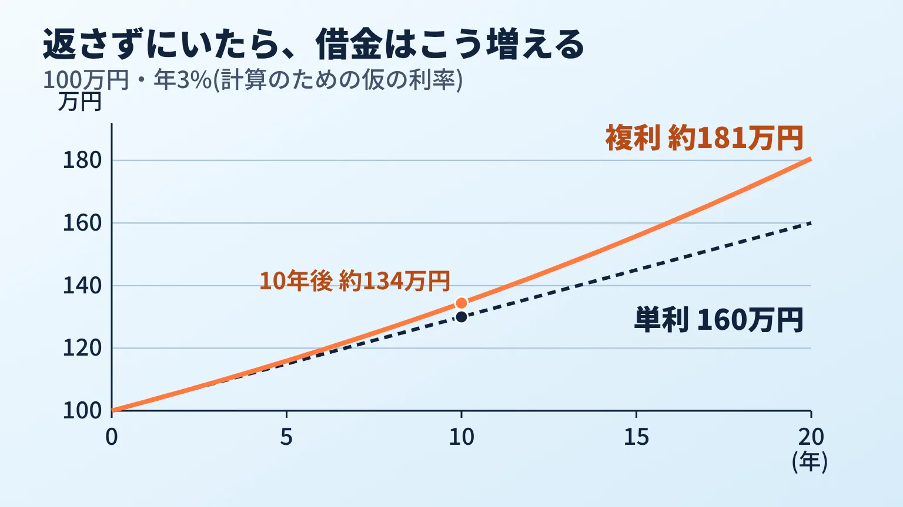

借りたお金には「利息」がつく
お金を借りると、借りた金額より多く返すことになる。その差が「利息」で、借りた金額に対する割合を「利率」という。年1%なら、100万円を1年借りると1万円が利息になる。
日本の国の奨学金（日本学生支援機構、JASSO）には、返す必要のない「給付型」と、返す必要のある「貸与型」がある。貸与型には、利子がつかない第一種と、利子がつく第二種がある。第二種では、貸与が終わるときに決まった利率が返し終わるまで続く「利率固定方式」と、おおむね5年ごとに利率を見直す「利率見直し方式」のどちらかを選ぶ。
利率は時期によって変わる。この記事では、計算のしくみを知るために、いくつかの「仮の利率」で計算してみる。実際の利率は、日本学生支援機構の公式ページで確認しよう。
単利と複利
100万円を、年3%の利息で借りたまま、1円も返さずに放っておくとしよう。利息のつき方には2種類ある。
- 単利：最初の100万円（元金）にだけ利息がつく
- 複利：利息にも利息がつく（増えた金額に、また3%がかかる）
| 単利：100万 × (1＋0.03×10) ＝ | 130万円 |
| 複利：100万 × 1.0310 ＝ | 約134万円 |
10年後の金額は、単利なら130万円、複利なら約134万円（1,343,916円）になる。

10年では差が4万円ほどだが、20年たつと単利は160万円、複利は約181万円になる。ただし、実際の奨学金やローンは、返しながら元金が減っていく。この図は、「何も返さずに放っておいた場合」を計算したものだ。
電卓で、1000000 × 1.03 を10回くり返して、10年後の金額を確かめてみよう（電卓によっては「＝」を押し続けると同じ計算をくり返せる）。
毎月返すと、総額はいくらになる？
実際には、毎月一定の金額を返していくことが多い。借りた元金を P、年利率を r、返済の回数を n 回とし、i ＝ r ÷ 12 とおくと、毎月同じ額を返す方法（元利均等返済）の毎月の返済額は、次の式で計算できる。
例えば、月5万円を4年間借りて、返し始めるときの元金が240万円になったとしよう。これを15年（180回）で返す場合を、仮の利率で計算した。表の「総額」は返す合計、「利息」は総額から元金240万円を引いた金額だ。
| 利率 | 毎月（円） | 総額（円） | 利息（円） |
| 0% | 13,333 | 2,400,000 | 0 |
| 1% | 14,364 | 2,585,496 | 185,496 |
| 2% | 15,444 | 2,779,958 | 379,958 |
| 3% | 16,574 | 2,983,313 | 583,313 |
利率が0%なら、240万円を180回で割った13,333円ずつ返して終わる。利率が1%上がるごとに、返す総額は約19万〜20万円ずつ増える。
返済期間も大切だ。利率1%で、同じ240万円を20年（240回）で返すと、毎月の返済額は11,037円に減るが、利息の合計は約25万円（248,991円）に増える。月々の負担を軽くすると、そのぶん利息が増える。
返済額を軽くしたいとき、利率・返済期間・総額の3つは、それぞれどう変わるだろう。表を見ながら考えてみよう。
もう1つの借り方：リボ払い
クレジットカードのリボ払いは、毎月の支払額を一定にする仕組みだ。計算のために、年15%の利率と仮定して、10万円の買い物を毎月5,000円ずつ返す場合を考えよう。毎月の利息は「残りの金額 × 0.15 ÷ 12」で、返したお金のうち利息の分は元金を減らさない。
計算すると、返し終わるまで24回（2年）かかり、利息の合計は約1万6千円（15,795円）になる。10万円の買い物に、約16%の利息が上乗せされた計算だ。利率は会社や契約によって違うので、契約するときは必ず確認しよう。
18歳からの「契約」
2022年4月1日から、成年年齢が18歳になった。18歳になると、親の同意がなくても、クレジットカードを作ったり、ローンを組んだりできる。一方で、未成年者が親の同意なしに結んだ契約を取り消せる「未成年者取消権」は、使えなくなる。
お金を借りる契約では、利率・返済期間・返す総額を自分で確かめる力が必要になる。今回の計算は、そのための道具だ。
まとめ
- 利率はいくつか（固定か、見直しか）
- 返す総額はいくらか（元金＋利息）
- 毎月の返済額と期間はどうなるか
この記事は、計算のしくみを紹介するもので、特定の借り方を勧めるものではない。進学や借りるお金のことで迷ったら、学校の先生や奨学金の窓口、契約のトラブルなら消費者ホットライン（188）に相談しよう。